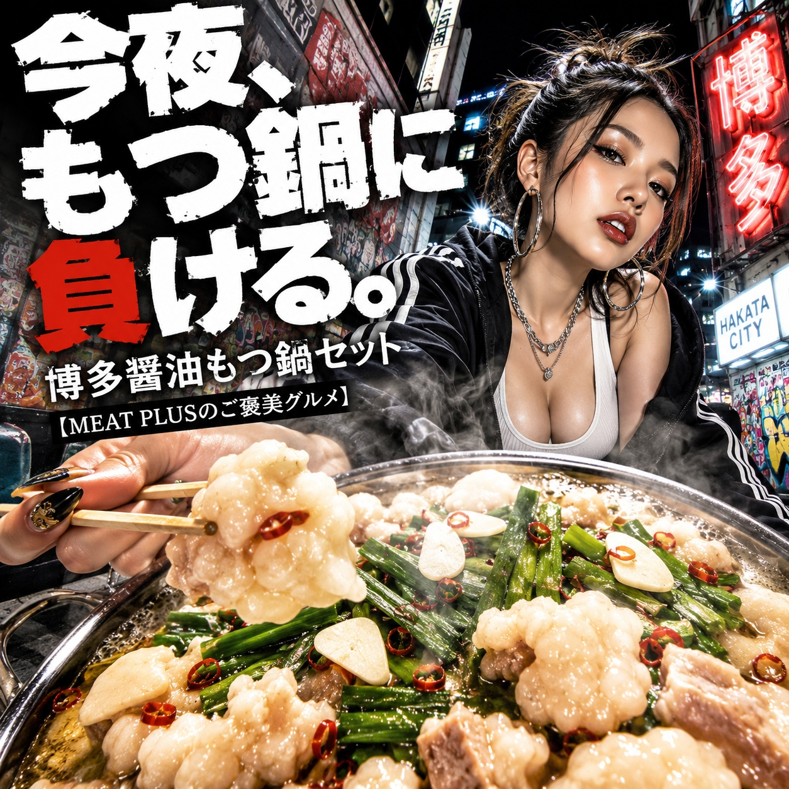
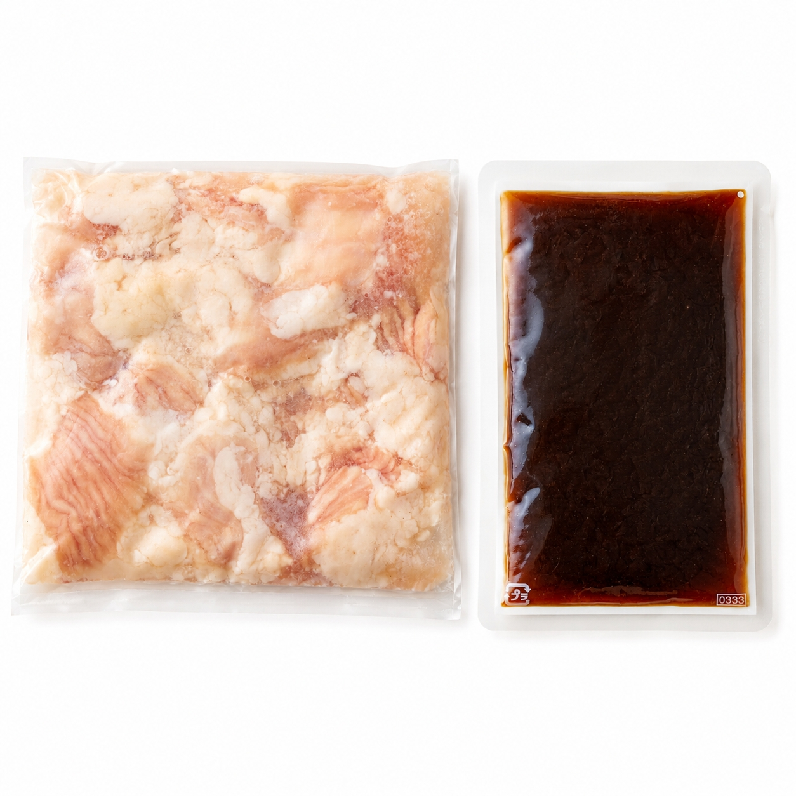
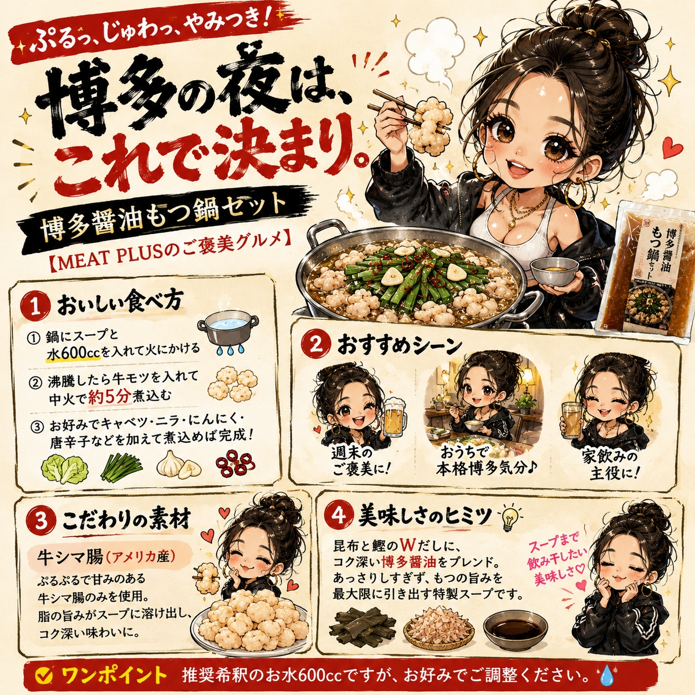

SCENE 01

i 惣菜・加工品
【ぷりぷり牛もつとコク旨スープ。本場博多の味をご家庭で。】
今夜は家族みんなで食卓を囲んで、心も体も温まるお鍋はいかがでしょうか。本場博多の味をご家庭で手軽にお楽しみいただける「博多醤油もつ鍋セット」をお届けします。主役の牛もつは、丁寧に下処理されたぷりぷりとろける食感のシマ腸を使用。噛むほどに上質な脂の甘みと旨みがじゅわっと口の中に広がります。スープは、昆布とかつおの出汁が効いた、まろやかでコク深い特製醤油味。牛もつの旨みを最大限に引き立て、野菜の甘みとも絶妙に絡み合います。冷凍でお届けするので、食べたい時にいつでも本格的なもつ鍋が楽しめます。キャベツやニラ、ごぼうなど、お好みのお野菜を加えるだけで、お店のような贅沢な味わいが完成します。〆にはちゃんぽん麺やご飯を入れて、最後の一滴までスープの旨みをご堪能ください。このもつ鍋セットで、美味しく楽しいひとときをお過ごしください。
公式サイトへ移動します。価格・在庫・配送条件は移動先で最終確認してください。


PRODUCT INFORMATION
牛シマ腸（アメリカ産）、還元水あめ、しょうゆ、発酵調味料、食塩、こんぶエキス、こんぶ加工品、醸造酢、かつおエキス／調味料（アミノ酸等）、カラメル色素、酒精、増粘剤（キサンタン）、（一部に小麦・大豆を含む）
FAQ
いいえ、本商品にはお野菜、麺、薬味は含まれておりません。キャベツ、ニラ、ごぼう、豆腐など、お好みの具材をご用意いただき、オリジナルのもつ鍋をお楽しみください。〆にはちゃんぽん麺やご飯がおすすめです。
はい、問題ございません。スープは常温対応の製品ですので、冷凍のモツと同梱した場合でも凍っていないことがございますが、品質には全く影響ありませんのでご安心ください。すぐに召し上がらない場合は、商品到着後速やかに冷凍庫で保管してください。
MEAT PLUS OFFICIAL SHOP
仕入れ・加工・梱包・発送まで自社で行うMEAT PLUSの公式オンラインショップでご注文いただけます。
公式オンラインショップで購入する